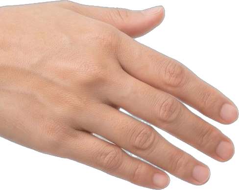
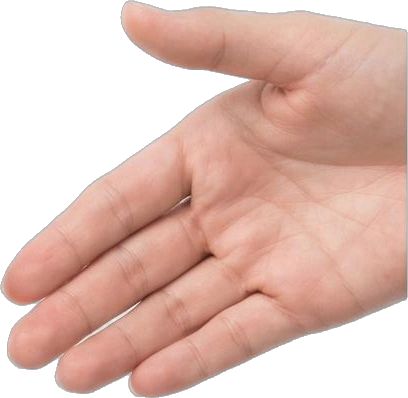
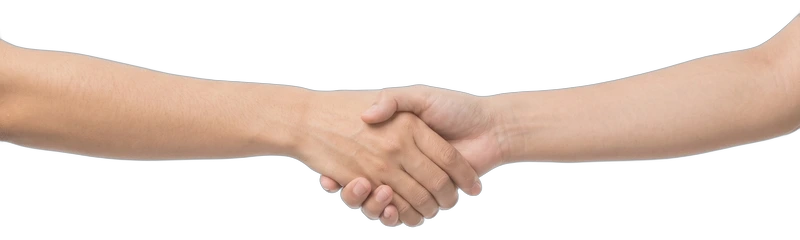
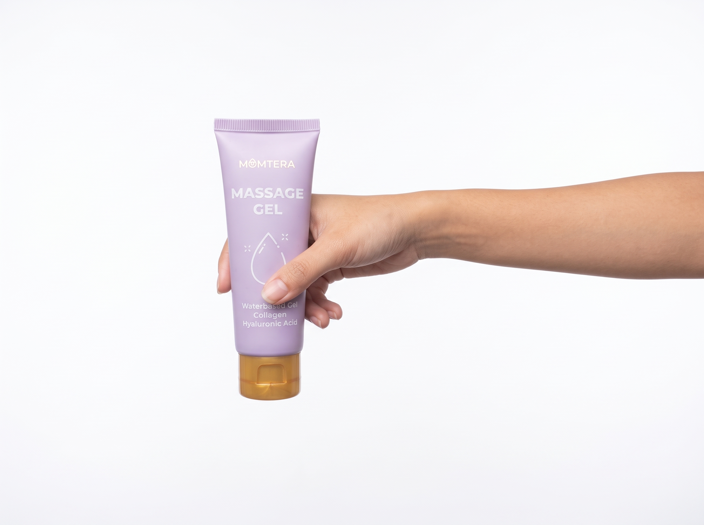
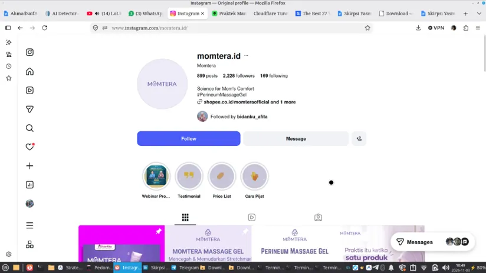
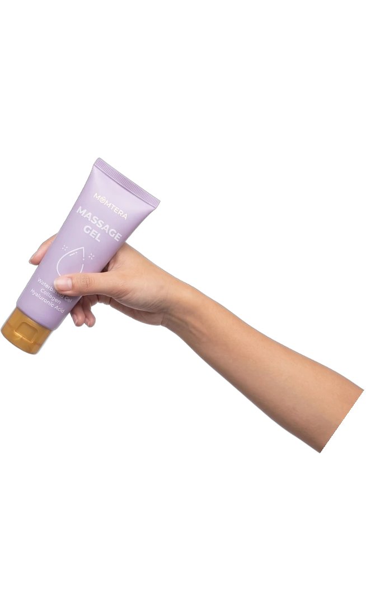

Sukses Promil
Pendampingan promil terarah dengan evaluasi siklus ovulasi, skrining USG rahim, dan panduan nutrisi personal untuk maksimalkan ikhtiar bunda & ayah.
Konsultasi PromilRuang konsultasi kehamilan, USG modern, & persalinan ramah ibu. Mengobrol santai seperti dengan sahabat, tanpa rasa takut dihakimi.
Dari persiapan kehamilan hingga perawatan si kecil, Bidan Afita siap mendampingi dengan penuh kehangatan dan standar medis profesional.
Pendampingan promil terarah dengan evaluasi siklus ovulasi, skrining USG rahim, dan panduan nutrisi personal untuk maksimalkan ikhtiar bunda & ayah.
Konsultasi PromilKonsultasi kehamilan & laktasi privat dari rumah via Zoom atau temu langsung di klinik tanpa antre lama. Jadwal fleksibel menyesuaikan waktu nyaman bunda.
Booking Jadwal TemuPemasangan dan lepas IUD, implan, hingga suntik hormonal dengan teknik minim rasa nyeri serta konseling mendalam agar bunda mantap memilih.
Tanya Pilihan KBStimulasi motorik dan relaksasi si kecil lewat gentle baby massage dan hydrotherapy bersertifikat medis untuk tidur lebih lelap dan tumbuh optimal.
Reservasi Baby SPABukan sekadar tindakan medis, kami hadir sebagai sahabat yang siap mendampingi proses kehamilan hingga persalinan dengan ketulusan dan rasa aman.



Ruang aman & layanan kebidanan modern yang dipersonalisasi untuk setiap kenyamanan bunda.
Kamar bersalin privat berhawa sejuk dengan panduan napas minim trauma.
Pelajari LayananVisual wajah janin dan detak jantung yang jelas dengan penjelasan teliti.
Jadwalkan USG
Evaluasi ovulasi, panduan nutrisi, dan pemantauan siklus bersama pasangan.
Konsultasi Promil
Stimulasi motorik, relaksasi otot, dan perawatan laktasi lancar ASI.
Reservasi SPAFormula pijat perineum untuk meningkatkan elastisitas jalan lahir agar persalinan minim robekan, serta memudarkan stretchmark secara aman.

Kumpulan jawaban penting seputar layanan konsultasi, jadwal USG, persalinan, hingga produk resmi Bidan Afita.
Masih memiliki pertanyaan lain yang belum terjawab?
Tanya Langsung ke Bidan Afita